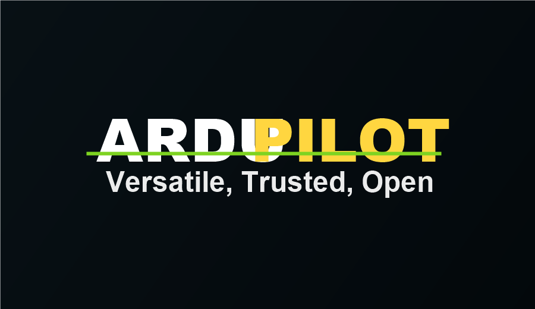

Software · Open source
ArduPilot Autopilot Software
Plataforma de autopiloto para multirrotores, ala fija, rovers, barcos y otros vehículos no tripulados.
Recurso gratuito
- Compatible con drones multirrotor, helicópteros, aviones, rovers, barcos y submarinos.
- Funciona con controladoras Pixhawk y hardware compatible.
- Permite misiones autónomas, telemetría, geocercas y failsafes.
- Se integra con estaciones de tierra y herramientas basadas en MAVLink.
- Base ideal para aprendizaje, investigación y proyectos profesionales.
- Comunidad global con documentación, foros y guías de configuración.